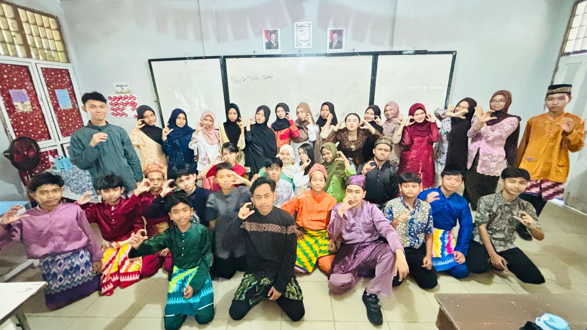

Arsip kelas — sejak 2024
C
Ini bukan website sekolah. Ini cuma tempat Kelas C, alumni SMP Negeri 21 Kota Pontianak, naruh foto dan catatan supaya nggak hilang begitu aja.
@n9necoast_ di Instagram →
01 — Tentang Kami
Tentang Kelas Kami
Kelas C mulai jalan bareng sekitar tahun 2024, waktu masih kelas 7, di SMP Negeri 21 Kota Pontianak. Sekarang, tahun 2026, sudah di kelas 9 — kelas terakhir sebelum semuanya pisah jalan masing-masing dan resmi jadi alumni.
Halaman ini isinya foto dan catatan singkat soal kelas ini. Belum lengkap, dan mungkin nggak akan pernah benar-benar "selesai" — tapi setidaknya ada yang tersimpan.
- 35
- Murid aktif
- 2024
- Mulai bareng
02 — Album
Album Foto
Sebagian foto ini mungkin kelihatan biasa aja sekarang. Coba lihat lagi beberapa tahun dari sekarang.
03 — Perjalanan
Perjalanan Kelas
05 — Rating
Kasih Rating
06 — Instagram
@n9necoast_
Dokumentasi lain, story, dan hal-hal receh kelas ada di Instagram, bukan di sini semua.
Kunjungi Instagram